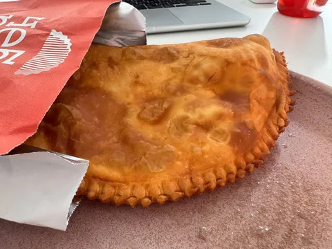

В последние годы стал все чаще замечать некоторый ренессанс Совка, особенно среди зумеров. Молодежь романтизирует социалистическое прошлое нашей страны и в целом прется по ретро-теме. В моде нейминг с отсылками к СССР, soviet-style аутфит и Лариса Долина. Вернулось даже такое явление как коммуналки (зумеры их еще называют ко-ливинг).
Я сам в осознанном возрасте Страну Советов не застал, зато хорошо помню то, что от нее осталось в 90-х. И что-то обратно нифига не хочется. Однако, один из трендов возрождения советского наследия я принимаю. Это, конечно же, гастрокультура.
В первую очередь - чебуреки. В советское время это была простая закуска. Но в пост-советской России чебуреки стали совсем уж третьесортным джанк-фудом из привокзальных ларьков. Уважающий себя человек не стал бы таким питаться. Имидж этого блюда граничил с маргинальностью. К счастью, сейчас чебуреки совершили обратный разворот над Атлантикой, и я этому рад.
Конечно, вынужденно появились некоторые фэнси-девиации типа чебуреков с крабами и артишоками, с креветками и вешенками, щукой и жареной капустой (не выдумываю - переписываю из меню реального заведения, откуда частенько заказываю). Мода - она такая, движется не по кругу, а по спирали, и виток 202х вынуждает к экспериментам. Но классический чебурек остается собой - с crispy тестом, нежным мясом и соком, стекающим по пальцам.
Другие гастро-явления тоже вернулись - вареничные, пельменные, пышки, рюмочные и прочие. И это классно. Не то чтобы я был "за скрепы" и "против буржуйских бургеров" - в вопросах гастрономии я как раз за максимальную diversity (сам люблю и тако, и пибимпаб). И вообще, русская кухня сейчас на подъеме. Притом особенно - на востоке страны (на примере Байкала и Красноярска - там в этом году я побывал в нескольких ошеломительно-вкусных ресторанах русской кухни с Сибирским колоритом).
О том, откуда сейчас взялся в целом этот культурный феномен любви ко всему советскому, я спросил у самого настоящего зумера, журналистки, редактора и автора Екатерины (по совместительству - моя сестра, так что не скупитесь на реакции и комментарии!). Вот, что она рассказала:
⤵︎⤵︎⤵︎
